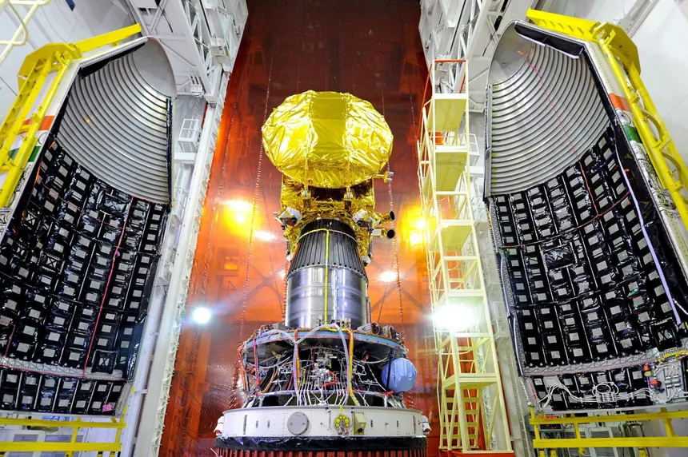
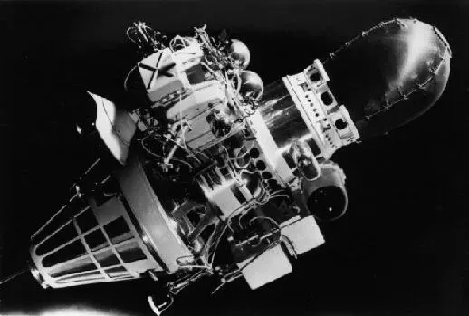

Moon - Earth's Natural Satellite
Apollo 11 Mission
Apollo 11 was a historic space mission launched by NASA on 16 July 1969. Its main goal was to land humans on the Moon and safely return them to Earth. This mission became one of the greatest achievements in space exploration.
The spacecraft carried three astronauts: Neil Armstrong, Buzz Aldrin, and Michael Collins. Armstrong and Aldrin landed on the Moon, while Collins stayed in orbit around it.
On 20 July 1969, Neil Armstrong became the first human to step on the Moon. His famous words marked a major moment in history and inspired people all over the world.
The astronauts collected samples of rocks and soil from the lunar surface. These samples helped scientists learn more about the Moon’s composition and origin.
Apollo 11 also demonstrated that humans could travel to another celestial body and return safely. It proved the success of advanced space technology and planning.
Overall, Apollo 11 remains one of the most important missions in history. It opened the path for future space exploration and inspired many generations.

Chandrayaan-1
Chandrayaan-1 was India’s first mission to the Moon, launched by ISRO on 22 October 2008. The mission aimed to explore the lunar surface and gather scientific data.
The spacecraft carried several scientific instruments to study the Moon’s surface, minerals, and topography. It also created detailed maps of the Moon.
One of the most important achievements of Chandrayaan-1 was the discovery of water molecules on the Moon’s surface. This finding changed the understanding of the Moon completely.
The mission also helped in identifying different minerals and chemical elements present on the Moon. It contributed valuable data for global research.
Chandrayaan-1 strengthened India’s position in space exploration and showed its technological capabilities to the world.
Overall, this mission was a great success and laid the foundation for future lunar missions by ISRO.

Chandrayaan-3
Chandrayaan-3 was launched by ISRO in 2023 with the aim of achieving a soft landing on the Moon. It focused on demonstrating safe landing and rover movement on the lunar surface.
The mission successfully landed near the Moon’s south pole region. This made India the first country to achieve a landing in this challenging area.
The lander and rover carried instruments to study the surface, temperature, and seismic activity of the Moon. This helps scientists understand the Moon’s environment.
Chandrayaan-3 showed major improvements compared to previous missions, especially in landing technology and precision.
The mission proved India’s capability in advanced space missions and increased global recognition for ISRO.
Overall, Chandrayaan-3 is considered a major milestone in India’s space journey and opened new possibilities for future exploration.

Luna 2 Mission
Luna 2 was launched by the Soviet Union on 12 September 1959. It was the first spacecraft to successfully reach the Moon.
Unlike modern missions, Luna 2 did not land softly but crashed onto the Moon’s surface. However, it proved that reaching the Moon was possible.
The mission carried instruments to study radiation and magnetic fields in space. It provided early data about the environment beyond Earth.
Luna 2 confirmed that the Moon does not have a strong magnetic field. This was an important scientific discovery at that time.
This mission was a major step in the early space race between the Soviet Union and the United States.
Overall, Luna 2 played a key role in the history of space exploration and paved the way for future Moon missions.
